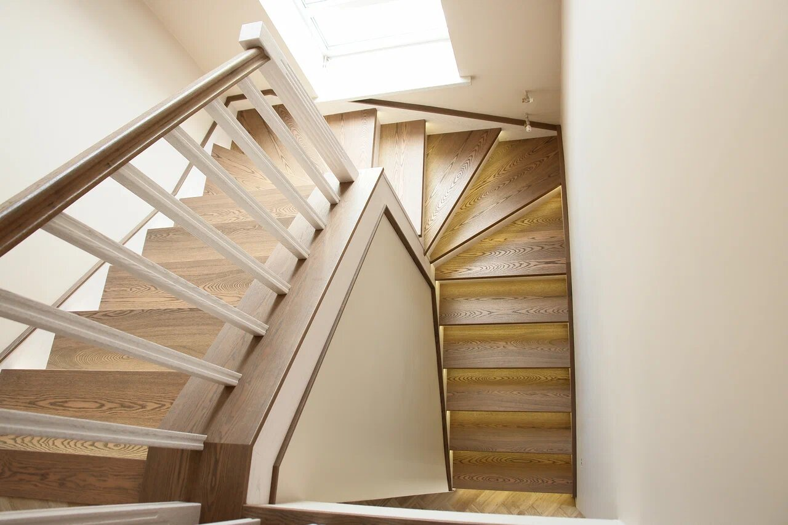
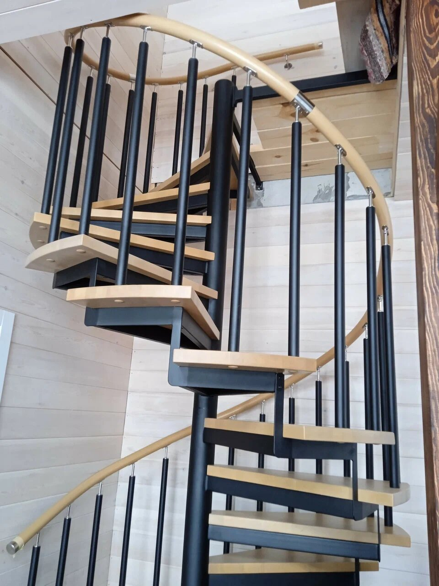
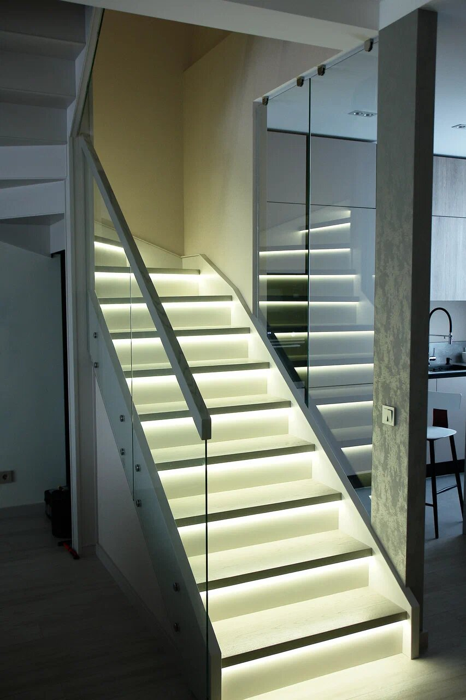
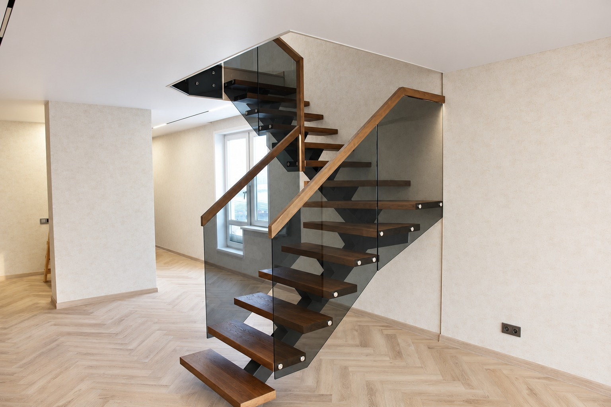
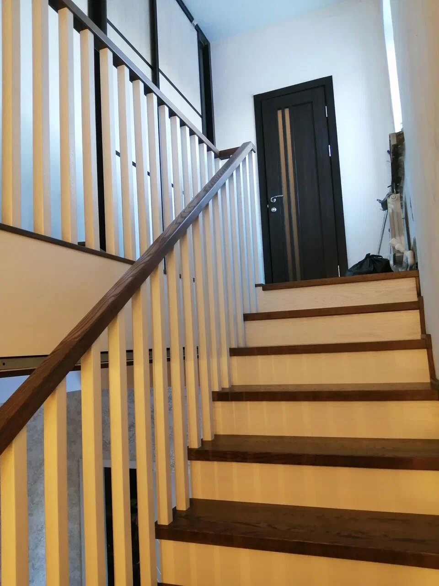
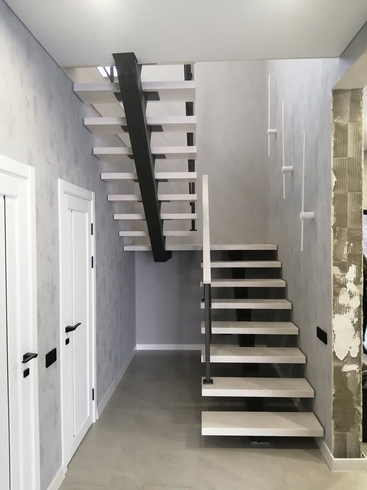

Смотреть проектВзгляд сверху
Поворот лестницы, деревянные ступени и светлое ограждение.
Изготовление лестниц в Кемерово
Соединяем этажи, материалы и ваши идеи.
Создаём лестницы, которые становятся частью дома.

Винтовая лестница · дерево и металл01 / МИР СТУПЕНЕЙ01 — Наш подход
Лестница задаёт настроение всему пространству. В «Мире ступеней» мы начинаем с вашей идеи: какой вы видите свой дом, что для вас удобно и какие детали вам близки.
Обсудим форму, материалы и внешний вид, чтобы найти решение именно для вашего интерьера.
От первого эскиза
до последней ступени
02 — Наши работы
Фотографии выполненных проектов.
Рассмотрите общий вид и детали.

Смотреть проектПоворот лестницы, деревянные ступени и светлое ограждение.

Смотреть проектТёплая подсветка деревянных ступеней и узорное ограждение.
Деревянные ступени и чёрный металлический каркас.

Смотреть проектВыразительные ступени и прозрачное ограждение.

Смотреть проектНатуральная фактура дерева и светлая основа лестницы.

Смотреть проектСветлые ступени и чёткие линии тёмного ограждения.
Нажмите на фотографию, чтобы рассмотреть лестницу и детали проекта.
Отдельные альбомы наших работ: общий вид, разные ракурсы и детали каждой лестницы.
03 — От идеи к результату
Сначала знакомимся с задачей.
Затем договариваемся о деталях.
Расскажите о доме, пожеланиях и стиле. Фотография помещения или пример помогут начать разговор.
Уточняем размеры, конструкцию, материалы и отделку. Согласовываем стоимость и сроки.
После согласования проекта переходим к изготовлению лестницы по выбранным параметрам.
Порядок доставки и монтажа согласуем заранее, с учётом готовности вашего дома.
Полезно знать
Подготовьте примерную высоту между этажами, размеры проёма и фотографии помещения. Если есть понравившаяся лестница, сохраните её фото. Точный расчёт потребует уточнения размеров и материалов.
Да. Референсы, эскизы и фотографии интерьера помогут понять ваши пожелания. Возможность реализации конкретного решения обсудим индивидуально.
От размеров, конструкции, выбранных материалов, ограждения и отделки. Стоимость и сроки определяются после обсуждения проекта.
Давайте начнём с вашей идеи
По всем вопросам звоните — обсудим вашу лестницу
и ответим на вопросы.